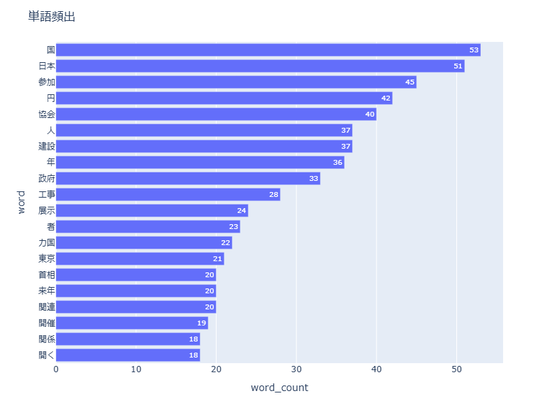
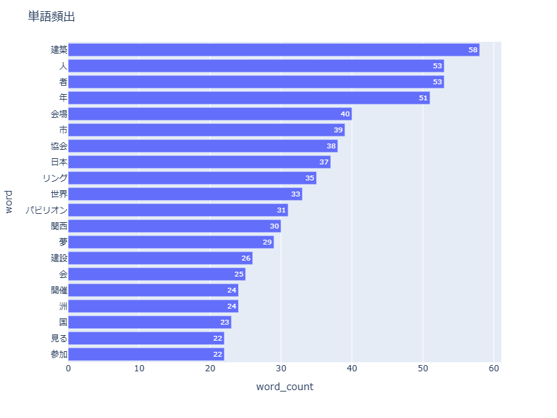
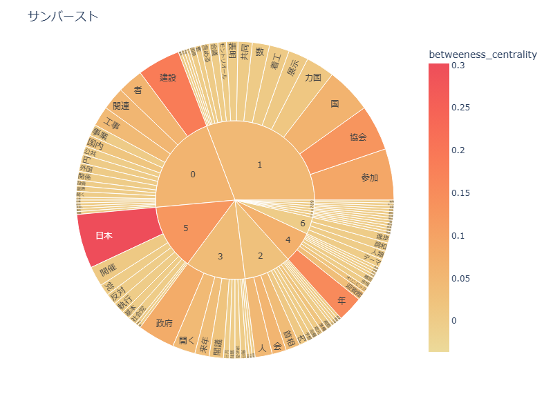
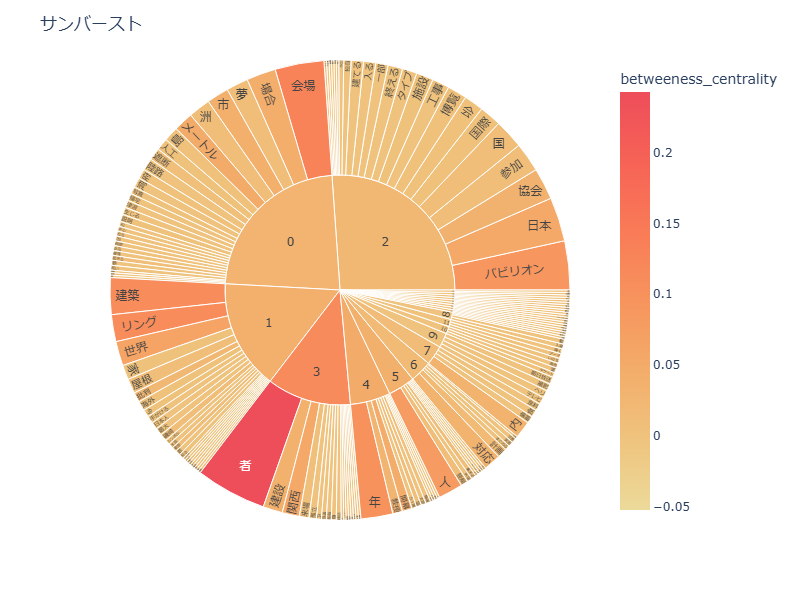
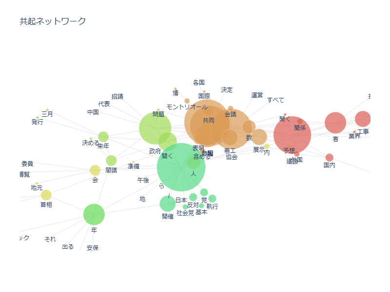
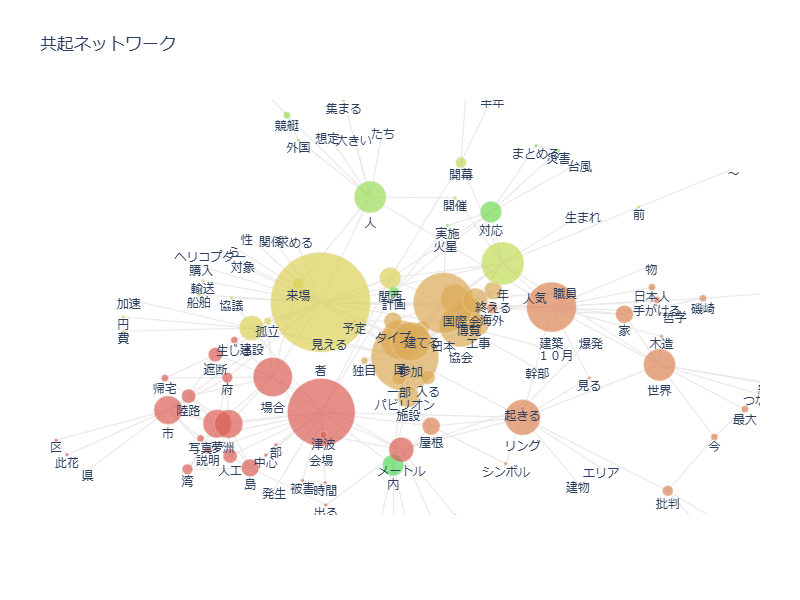

テキストマイニング
1970年、2025年開催の大阪万博についての朝日新聞の記事のテキストマイニングを行った。
対象となる記事は一年前の1969年3月15日～9月13日、2024年4月13日～10月13日
単語頻出
１９７０年 / ２０２５年 大阪万博
 
1969年単語頻出
2024年単語頻出
サンバースト
１９７０年 / ２０２５年 大阪万博
 
1969年サンバースト
2024年サンバースト
共起ネットワーク
１９７０年 / ２０２５年 大阪万博
 
1969年共起ネットワーク
2024年共起ネットワーク